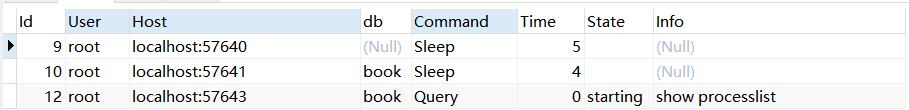

(一) mysql无法启动, 报错 updating PID file (...).
错误信息
[root@localhost]service mysqld start
Staring MySQL. The server quit without updating PID file (...).
1.排查进程是否启动, 如果启动了则kill掉再试试
ps aux | grep mysql
2.查看端口是否占用, 如果占用则换其他端口试试
netstat nlp | grep 3306
3.查看mysql安装路径是否属于mysql所有
ll /path/to/mysql5.6
4.查看日志, 发现日志并没有任何记录, 日志一定要有可写权限
cat /path/to/mysql.log
5.备份旧配置, 新建配置
mv /path/to/my.cnf /path/to/my.bk.cnf
#新建一个正确的配置
touch /path/to/my.cnf
#启动尝试
service mysqld start
#启动成功
Staring MySQL... [ ok ]
旧配置找问题
发现 group_concat_max_len 导致的, 可能原因是设置过大, 或者是无效参数, 这里把他注释掉.
(二) client does not support, mysql8.0
如果你没有设置认证方式，默认的密码加密方式是：caching_sha2_password，而现在很多客户端工具还不支持这种加密认证方式，连接测试的时候就会报错：client does not support authentication protocol requested by server; consider upgrading MySQL client，这里的错误信息就是不支持身份认证方式，没关系，去my.ini里面在[mysqld]下面加上这句话即可：
default_authentication_plugin=mysql_native_password
mysql> use mysql
Database changed
mysql> select user, host, plugin, authentication_string from user where user='test';
Empty set (0.00 sec)
#此处密码已经被加密为caching_sha2_password类型
mysql> select user, host, plugin, authentication_string from user where user='root';
+------+-----------+-----------------------+------------------------------------------------------------------------+
| user | host | plugin | authentication_string |
+------+-----------+-----------------------+------------------------------------------------------------------------+
| root | localhost | caching_sha2_password | $A$005$x1 WikRO@egf?X>q> K.y2oKvVBN6G2Fu6Y5mtqcDaaa/dsP4319mUkh4p4qdC |
+------+-----------+-----------------------+------------------------------------------------------------------------+
1 row in set (0.00 sec)
#修改密码类型和密码(navicat支持mysql_native_password)
mysql> ALTER USER 'root'@'localhost' IDENTIFIED WITH mysql_native_password BY 'mysql';
Query OK, 0 rows affected (0.40 sec)
mysql> select user, host, plugin, authentication_string from user where user='root';
+------+-----------+-----------------------+-------------------------------------------+
| user | host | plugin | authentication_string |
+------+-----------+-----------------------+-------------------------------------------+
| root | localhost | mysql_native_password | *E74858DB86EBA20BC33D0AECAE8A8108C56B17FA |
+------+-----------+-----------------------+-------------------------------------------+
1 row in set (0.00 sec)
(三) MySQLCPU使用过高
通过 show processlist 或 show full processlist 查看当前执行的语句

对于查询时间长、运行状态（State 列）是Sending data, Copying to tmp table, Copying to tmp table on disk, Sorting result, Using filesort等都可能是有性能问题的查询（SQL）
杀掉mysql内部的进程
可以通过执行类似 kill 12 进行来终止长时间执行的会话, 12是进程ID, 通过show processlist查看进程ID
(四) ERROR 1840 @@GLOBAL.GTID_EXECUTED is empty
报错信息
ERROR 1840 (HY000) at line 24: @@GLOBAL.GTID_PURGED can only be set when @@GLOBAL.GTID_EXECUTED is empty
解决方法一
reset mater
这个操作可以将当前库的GTID_EXECUTED值置空
解决方法二
mysqldump -uroot -p --set-gtid-purged=off -d sso > sso1.sql
在dump导出时，添加--set-gtid-purged=off参数，避免将gtid信息导出
MySQL server has gone away
造成这样的原因一般是sql操作的时间过长，或者是传送的数据太大(例如使用insert ... values的语句过长， 这种情况可以通过修改max_allowed_packed的配置参数来避免，也可以在程序中将数据分批插入)。
mysql> show global variables like 'max_allowed_packet';
+--------------------+---------+
| Variable_name | Value |
+--------------------+---------+
| max_allowed_packet | 1048576 |
+--------------------+---------+
1 row in set (0.00 sec)
mysql> set global max_allowed_packet=1024*1024*128;
(五) ORDER BY clause is not in GROUP BY clause and contains nonaggregated column 'information_schema.PROFILING.SEQ' which is not functionally dependent on columns in GROUP BY clause; this is incompatible with sql_mode
修改my.cnf的sql_mode
[mysqld]
sql_mode=NO_ENGINE_SUBSTITUTION,STRICT_TRANS_TABLES